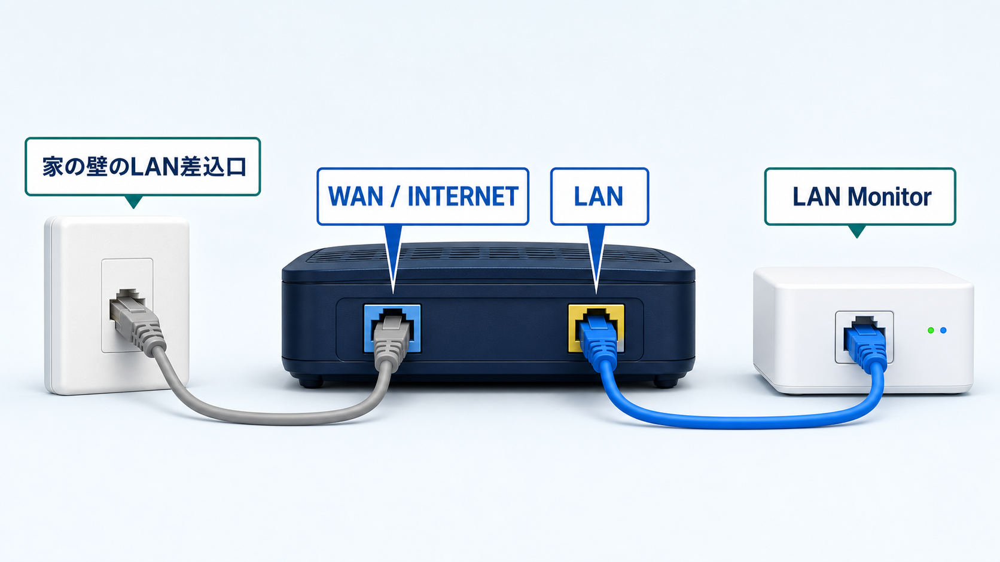
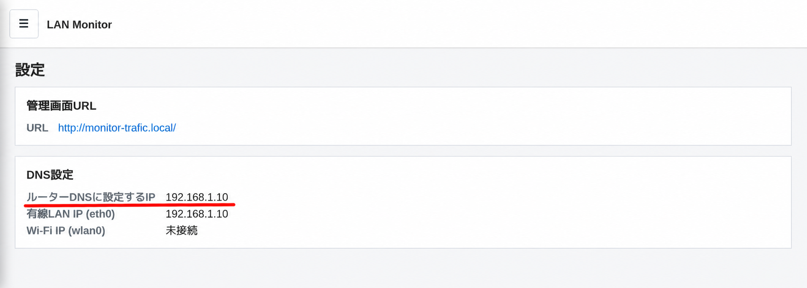
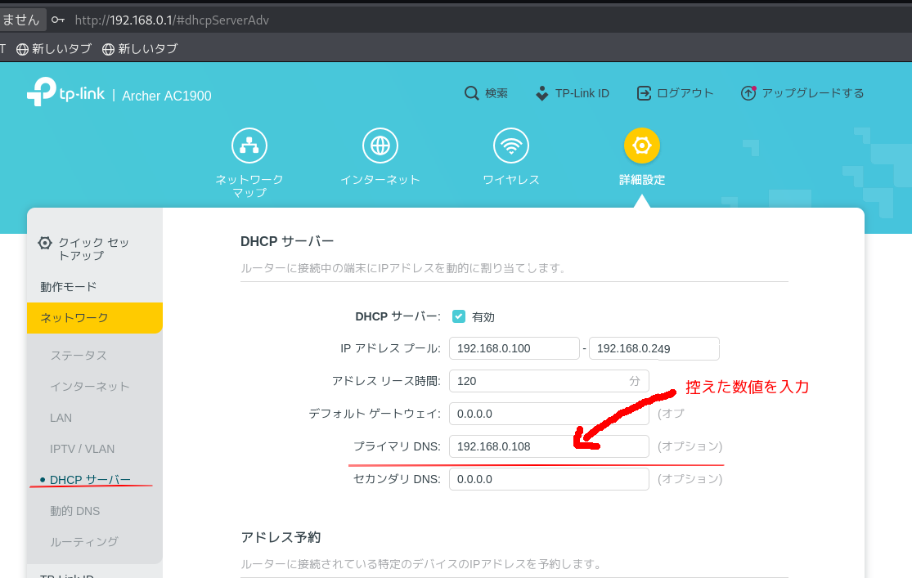
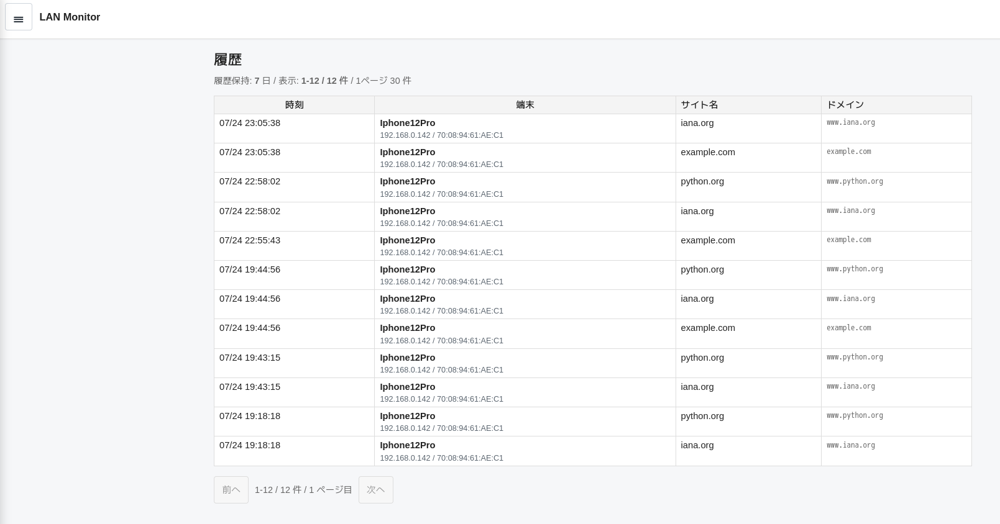

LAN Monitor本体とLANケーブル
同梱品を箱から出してください。
Before you start
同梱品を箱から出してください。
電源コードは同梱されていません。利用者ご自身でご用意ください。
Setup
途中で画面が違って見えても大丈夫です。近い名前の項目を探してください。

自宅Wi-Fiにつながっているスマホまたはパソコンで、下のアドレスを開きます。
続いて表示される「初期設定」画面で、「履歴へ進む」を押します。

LAN Monitorがルーターのアドレスを自動で確認するため、IPアドレスを調べる必要はありません。
※TP-Linkの場合

ここから先は、正しく動作しているかを確認する手順です。
Check
Wi-Fiをつなぎ直し、履歴が表示されることを確認します。
設定を反映するため、見守りたいスマホやパソコンのWi-Fiを一度オフにして、もう一度オンにします。

これからは、自宅Wi-Fiにつないだ端末のWebサイト履歴をLAN Monitor画面で確認できます。メッセージ本文やページの内容は記録されません。
Special cases
ここから先は、基本手順でうまくいかなかった場合や、特殊なネットワーク環境で使う場合にご覧ください。
最初だけLANケーブルで接続し、LAN Monitor画面の「設定」→「Wi-Fi接続」を開きます。「SSIDを検索」から自宅Wi-Fiを選び、Wi-Fiのパスワードを入力してください。
接続後に表示されるWi-Fi IPを、ルーターのDNSへ設定し直してからLANケーブルを外します。
IPv6側のDNSや、別のWi-Fi機器から配られるDNSを使うと、一部の履歴が記録されないことがあります。すべてのルーター／Wi-Fi親機で、端末へ配るDNSをLAN Monitorへそろえる必要があります。
設定場所が分からない場合は、機器の型番を添えてお問い合わせください。
ChromeやFirefoxなどでセキュアDNS（DNS over HTTPS）を個別に設定している場合、そのブラウザの履歴が記録されないことがあります。ブラウザの設定を「現在のサービスプロバイダを使用」またはオフにして確認してください。
自分で管理していないネットワークの設定は変更しないでください。必ずネットワーク管理者の許可を得てください。ゲストWi-Fiや端末同士を分離する設定では利用できない場合があります。
Q&A
ルーターのDNSへ入力した数字が、LAN Monitor画面に表示されたIPと同じか確認します。直らない場合は、DNSを「自動取得」または変更前の状態へ戻し、Wi-Fiをつなぎ直してください。
ログイン画面の「パスワードを忘れた場合」を押し、製品に同梱されたリカバリーコードと新しいパスワードを入力してください。
いいえ。スマホやパソコンへアプリを入れる必要はありません。自宅Wi-FiのDNS設定を使って履歴を記録します。
分かるのは、おおよその時刻、端末、Webサイト名、ドメインです。ページ本文、検索キーワード、メッセージ本文は記録しません。
いいえ。LAN Monitorを設定した自宅Wi-Fiにつながっている間だけが対象です。4G／5Gや外出先のWi-Fiは対象外です。
ルーターのDNSがLAN Monitorを向いたままだと、インターネットにつながらなくなることがあります。電源を切る前に、ルーターのDNSを「自動取得」または変更前の設定へ戻してください。
LAN MonitorはWebサイトの利用履歴を扱います。利用者へ知らせ、家庭内で合意したうえで使用してください。
LINE support
LINE公式アカウントから、ルーターのメーカー・型番、困っている手順、画面に出ているメッセージをお知らせください。
スマートフォンのカメラで
QRコードを読み取ってください。